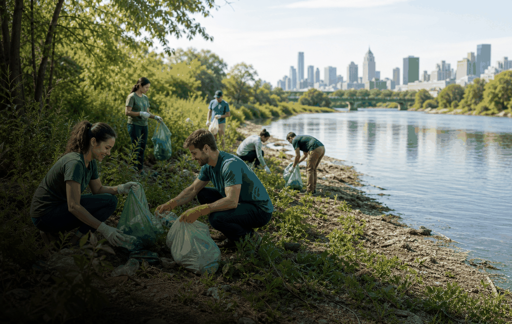

Dorewa - 2026
Ranar Tsaftace Duniya 2026
Ranar Tsaftace Duniya 2026 yana hada kalandar sauyin yanayi da shiri, hulda da jama'a da aikin gida.
KasaDuniya baki daya
BirniWuraren tsaftacewa na gida
WuriWuraren tsaftacewa na gida
Kwanaki20 September 2026
Abin sani
- Wannan abin sauyin yanayi ne a kalandar OneSliders, ba shafin hasashen yau da kullum ba.
- Shafin yana nuna rana, wuri da mahallin amfani.
- Sakon yana da alaka da shiri, kare muhalli da aikin jama’a.
- Hanyoyi da hotuna suna nan iri daya a harsuna, rubutu kuwa na gida ne.
Tsarin taro
| Rana | Mataki | Abin da ke faruwa |
|---|---|---|
| Kafin lokaci | Shiri | Masu shirya taro da abokan aiki suna sanar da sakonni da ayyuka. |
| Ranar taro | Aiki | Ayyuka, bayanai da gudummawar jama’a suna bayyana. |
| Bayan lokaci | Bibiya | Sakon yana komawa ilimi, tsari da aikin gida. |
Masu alaka a OneSliders
Tushe: UN World Cleanup Day na waje
An sabunta 14 Mayu 2026